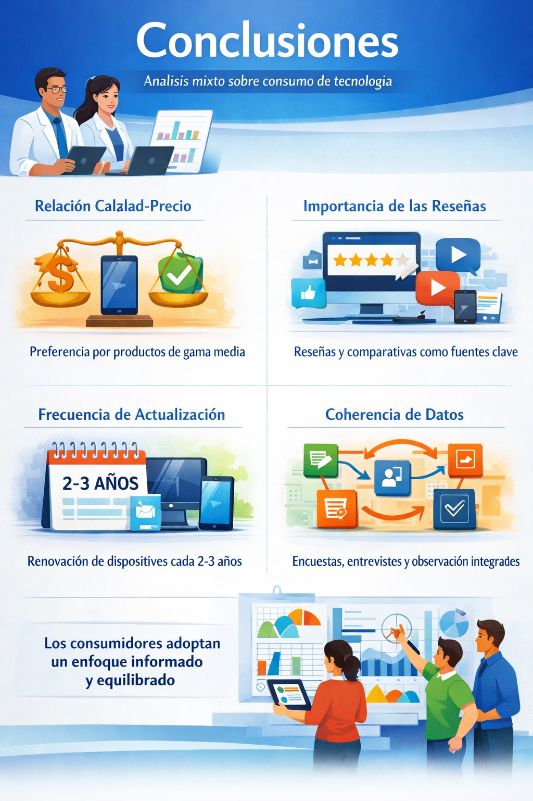

Conclusiones
El análisis mixto realizado permitió comprender de manera integral el comportamiento de los consumidores de productos tecnológicos. La combinación de técnicas cuantitativas y cualitativas proporcionó una visión equilibrada que integra tanto las tendencias numéricas como las percepciones y motivaciones expresadas por los participantes.
En primer lugar, se concluye que la relación calidad-precio es el criterio más determinante en la decisión de compra. Los consumidores buscan dispositivos que ofrezcan un rendimiento adecuado sin necesidad de realizar una inversión excesiva, lo que explica la preferencia por productos de gama media.
Asimismo, la información digital desempeña un papel fundamental en el proceso de elección. Las reseñas, comparativas y experiencias compartidas por otros usuarios se han consolidado como fuentes confiables, influyendo directamente en la percepción y valoración de los productos.
Otro aspecto relevante es la frecuencia de actualización de los dispositivos. La mayoría de los participantes renueva sus equipos cada dos o tres años, lo que refleja un consumo moderado y racional, influido tanto por la evolución tecnológica como por la necesidad de mantener un equilibrio económico.
Finalmente, la coherencia entre los datos obtenidos mediante encuesta, entrevistas, observación y revisión documental refuerza la validez de los hallazgos. En conjunto, los resultados permiten concluir que los consumidores actuales adoptan un comportamiento informado, comparativo y orientado a maximizar el valor de sus compras tecnológicas.
